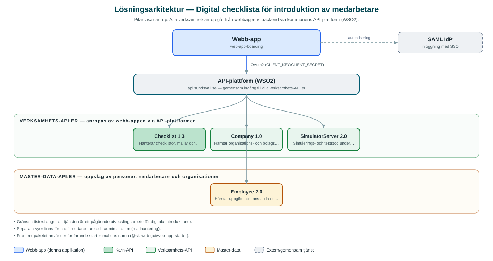

Digital checklista för introduktion av medarbetare
Digitalt stöd som ger chefer och nya medarbetare gemensamma checklistor att följa under introduktionen på arbetsplatsen.
Om applikationen
Tjänsten Digital checklista ger struktur åt introduktionen av nyanställda. Chefer ser sina pågående introduktioner och kan följa hur långt varje ny medarbetare kommit, medan medarbetaren själv kan bocka av sina aktiviteter i checklistan.
Ansvaret för delar av introduktionen kan delegeras till andra personer, och en mentor kan läggas till som stöd för den nya medarbetaren. Checklistorna bygger på mallar som administreras per organisation i ett särskilt administrationsgränssnitt.
Inloggning sker med kommunens gemensamma inloggning, och uppgifter om anställda och organisationer hämtas automatiskt från kommunens personalsystem via interna API:er. Enligt texter i tjänsten är detta ett pågående utvecklingsarbete för digitala introduktioner.
Det här stödjer applikationen
- Pågående introduktioner – Chefer får överblick över sina pågående introduktioner och medarbetarnas framsteg.
- Avbockningsbara checklistor – Aktiviteter i introduktionen bockas av av chef respektive ny medarbetare.
- Delegering – Ansvar för delar av introduktionen kan tilldelas andra personer.
- Mentorskap – En mentor kan läggas till som stöd och få tillgång till introduktionen.
- Malladministration – Checklistmallar hanteras per organisation i ett administrationsgränssnitt.
Teknisk dokumentation
Nedan beskrivs hur applikationen är uppbyggd, vilka API:er den använder och vad som krävs för att driftsätta den. Informationen är härledd ur källkoden och dess konfiguration på GitHub.
Arkitektur

Applikationen består av en webbaserad frontend (Next.js 15 (Pages Router), React 19, sk-web-gui, Tailwind CSS, next-i18next) och en backend (Node.js, Express, routing-controllers, TypeScript) som utvecklas i samma kodbas. Verksamhetsanrop går via kommunens gemensamma API-plattform (WSO2) – frontend pratar aldrig direkt med underliggande system. Inloggning: SAML (SSO). Övriga integrationer som förekommer i koden: SAML IdP, WSO2 API-gateway.
Teknikstack
- Frontend: Next.js 15 (Pages Router), React 19, sk-web-gui, Tailwind CSS, next-i18next
- Backend: Node.js, Express, routing-controllers, TypeScript
- Test: Jest, Cypress med kodtäckning
API-beroenden
Applikationen konsumerar följande API:er via kommunens API-plattform. Versionerna är hämtade ur källkodens API-konfiguration.
| API | Version | Användning |
|---|---|---|
| Checklist | 1.3 | Hanterar checklistor, mallar och avbockning av aktiviteter. |
| Company | 1.0 | Hämtar organisations- och bolagsuppgifter. |
| SimulatorServer | 2.0 | Simulerings- och teststöd under utveckling. |
| Employee | 2.0 | Hämtar uppgifter om anställda och nyanställningar. |
Konfiguration och driftsättning
- Backend: .env.example.local med CLIENT_KEY/CLIENT_SECRET för WSO2
- SAML-inställningar med IdP-certifikat och nyckelpar
- Frontend: .env-example kopieras till .env
- Datakontrakt genereras från API:ernas specifikationer
Noterbart ur källkoden
- Gränssnittstext anger att tjänsten är ett pågående utvecklingsarbete för digitala introduktioner.
- Separata vyer finns för chef, medarbetare och administration (mallhantering).
- Frontendpaketet använder fortfarande starter-mallens namn (@sk-web-gui/web-app-starter).
Källkod
Källkoden är öppen och finns hos Sundsvalls kommun på GitHub. I källkodsförrådet finns även instruktioner för att klona, konfigurera och starta applikationen i egen miljö.